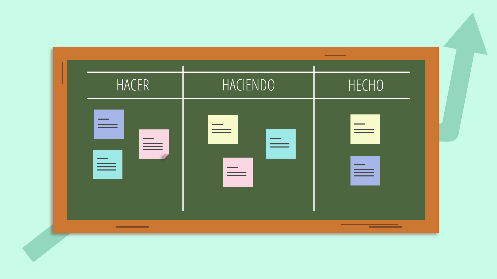

Recurso Didáctico Digital
Unidad 5: métodos de evaluación de proyectos de inversión de la UA Finanzas Empresariales

 Bienvenida
Bienvenida Unidad de competencia
Unidad de competencia Metodología
Metodología Evaluación de los aprendizajes
Evaluación de los aprendizajes Contactos
Contactos Requerimientos
Requerimientos Manual de usuario
Manual de usuarioMetodología
En esta unidad temática 5: “métodos de evaluación de proyectos de inversión”, fortalecerás el aprendizaje autónomo, el trabajo individual y el trabajo colaborativo. En este sentido, es importante destacar que por cada 4.5 horas de clases por semana, requerirás de 1.5 horas de trabajo autónomo.
Con esta unidad temática se pretende lograr la siguiente unidad de competencia: aplica los métodos de evaluación de proyectos de inversión con base en las herramientas de matemáticas financieras. Para lo cual abordaremos los siguientes temas:
- 5.1 Los proyectos de inversión. Con el estudio este tema comprenderás por un lado, la relevancia que tienen los proyectos de inversión en la vida de las personas y por el otro el impacto que tienen en la economía en su conjunto.
- 5.2 Proceso de preparación y evaluación de proyectos. Al estudiar este tema aprenderás cómo se prepara un proyecto de inversión para ser evaluado desde los puntos de vista de mercado, técnico, administrativo y financiero.
- 5.3 Métodos para la evaluación financiera de proyectos de inversión. Al abordar este tema no solo aplicarás los diferentes métodos de evaluación de proyectos de inversión, sino también podrás interpretar los resultados como base para la toma de decisiones.
Este RDD se construyó como apoyo educativo a las clases en la modalidad escolarizada; es dinámico, ya que el contenido cambia en función del tema que selecciones, y cuenta con un menú en el que podrás visualizar los siguientes botones de navegación: material de apoyo, glosario y referencias.
Las secciones antes mencionadas se describen a continuación:
- Contenidos. En esta sección hallarás la explicación de cada uno de los temas, y en algunos casos tendrás la opción de poner en práctica lo aprendido con ejercicios interactivos que no tendrán valor para tu evaluación. Adicionalmente, visualizarás botones en los que al seleccionarlos podrás consultar o bien descargar: formularios y actividades de aprendizaje. Cabe destacar que éstas últimas se realizarán en el aula, tendrán valor para la evaluación y se subirán a la plataforma indicada por el profesor(a).
- Material de apoyo. En este apartado ponemos a tu disposición: un formulario y una presentación en PowerPoint con la explicación de los temas de la unidad temática.
- Glosario. En esta parte del menú al teclear alguno de los términos financieros (incluido en el RDD), se mostrará su significado debidamente referenciado.
- Referencias. En esta opción encontrarás las referencias con base en las cuales se desarrollaron los contenidos de esta unidad temática.
Cabe mencionar que este recurso didáctico digital fue elaborado por curaduría de contenidos con información adaptada y recuperada de manera intacta de obras de distintos autores, por consiguiente, son citados en el apartado referencias y con su respectiva referencia a lo largo de los textos, respetando así, su autoría para el desarrollo de este recurso.

Recurso Didáctico Digital Unidad 5: métodos de evaluación de proyectos de inversión de la UA Finanzas Empresariales por M. en A. Eduardo Rodríguez Flores, M. en C. Josefina Hernández Jaime & Dra. Yasmín Ivette Jiménez Galán se distribuye bajo una Licencia Creative Commons Atribución-NoComercial-CompartirIgual 4.0 Internacional.
Basada en una obra en https://ssolaphi.github.io/index.html.